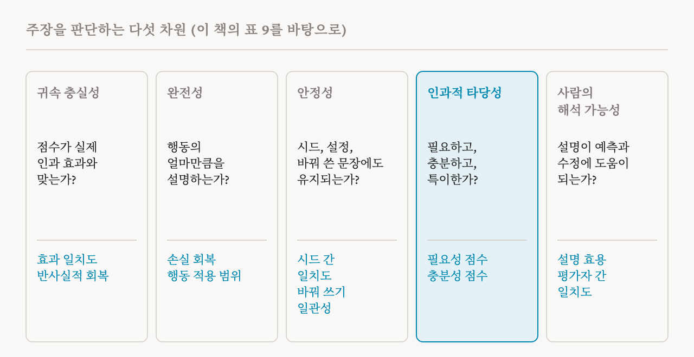
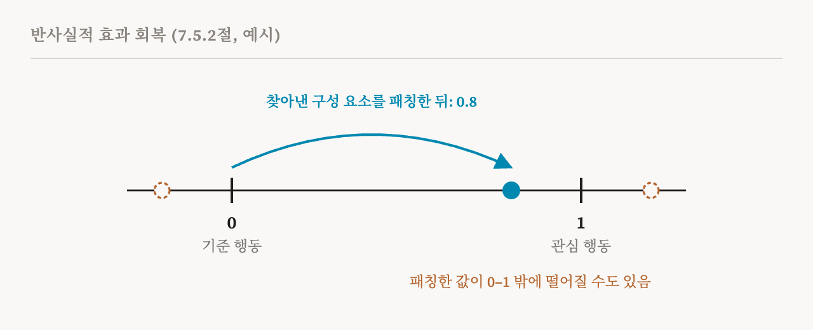

1편에서 이 책이 평가를 이 분야의 가장 시급한 열린 문제 가운데 하나로 본다고 했습니다. 이번 편은 이 책 자신의 제안, 곧 회로를 다루는 절 가운데 가장 긴 7.5절(58–66쪽)을 다룹니다. 이 연재의 다른 편보다 기술적이지만, 메시지는 간단하고 기억할 만합니다. 모델이 어떻게 작동하는지에 관한 주장은 여러 개의 독립된 차원에서, 숫자로, 기준선과 비교해서, 그리고 성공만큼 실패도 분명히 보고하면서 평가해야 한다는 것입니다.
공통의 잣대가 필요한 이유
서로 다른 방법은 서로 호환되지 않는 지표로 평가받습니다. 같은 행동에 대해서도 회로를 MLP와 어텐션 모듈 수준에서, CLT 특징 수준에서, 또는 개별 뉴런 수준에서 기술할 수 있습니다. CLT 기반 회로는 CLT가 충실하다는 것까지 보여야 합니다. 모듈 수준의 회로는 각 노드가 무엇을 하는지 설명해야 합니다. 그래서 방법들을 비교하기도, 이 분야가 발전하고 있는지 재기도 어렵습니다.
이 책은 지금의 관행에서 다섯 가지 문제를 짚습니다.
| 문제 | 무슨 일이 일어나나 |
|---|---|
| 목적의 모호함 | 같은 일에 쓰이는데도 방법마다 다른 목표로 만들어지고 다른 기준으로 평가됨. SAE, 회로, 조종 벡터 모두 모델을 조종할 수 있지만 서로 무관한 방식으로 채점됨 |
| 골라 보여 주기 | 신중하게 고른 예시나 좁은 데이터에서만 결과를 보여 주고, 실패와 적용 범위는 보고하지 않음 |
| 기준선 누락 | 행동 기반 방법, 무작위 방향, 뉴런 하나 같은 단순한 대안과 비교하지 않음 |
| 재현성의 틈 | 설정이 많고 학습 비용이 크며 무관해 보이는 요인에 민감한데, 재현성은 거의 보고되지 않음 |
| 충실성과 이해하기 쉬움의 틈 | 출력이 얼마나 읽기 쉬운지는 보여 주지만 모델에 얼마나 충실한지는 덜 보여 주어, 참인 설명보다 설득력 있는 설명이 보상받음 |
마지막 줄이 가장 중요합니다. 설명은 명료하고 만족스러우면서도 틀릴 수 있습니다. 논문들에 걸쳐 해석에 관한 주장들을 추적하는 공동 플랫폼을 만들자는 연구자들도 있고, 과학철학의 기준으로 설명을 평가하자는 연구자들도 있습니다. 하지만 이 책은 이 분야가 유망한 기법들의 모음에서 지식이 쌓여 가는 과학으로 자라려면, 구체적이고 표준적인 절차와 벤치마크와 보고 관행이 필요하다고 주장합니다.
공통의 언어
이 틀은 16편의 언어를 씁니다. '구성 요소'는 특징, 뉴런, 어텐션 헤드, 회로, 연결 등 어떤 분석 단위든 가리킵니다. 관심 있는 행동은 프롬프트들의 집합으로 나타냅니다. 입력 하나에 대한 구성 요소 집합의 개입 효과는, 그 활성값을 기준값으로 바꿨을 때 행동 지표가 바뀐 정도이고, 프롬프트들에 걸쳐 평균하면 행동 전체에 대한 효과가 됩니다.

차원 1: 귀속 충실성
방법이 올바른 구성 요소에 중요도를 매기는가? 많은 방법이 구성 요소마다 중요도 점수를 매기는데, 충실성은 그 점수를 실제로 개입했을 때의 효과와 맞춰 봅니다. 개입 효과 일치도는 입력들에 걸쳐 방법의 점수와 측정한 효과 사이의 상관관계입니다. 효과 크기 오차는 둘이 같은 척도에 있을 때 그 사이의 평균 간격입니다. 그리고 반사실적 효과 회복은, 예를 들어 정직함과 아첨처럼 두 행동 사이의 차이 가운데 얼마가, 찾아낸 구성 요소만 한쪽에서 다른 쪽으로 패칭했을 때 재현되는지 묻습니다.

이 책은 마지막 지표의 현실적인 결함을 짚습니다. 분모, 곧 두 행동 사이의 간격이 0에 가까울 수 있고, 패칭한 값이 양쪽 끝을 넘어설 수도 있어서, 점수가 1보다 훨씬 크거나 0보다 작아질 수 있습니다. 이 책의 저자 두 사람이 쓴 2026년 연구는 범위를 제한한 버전을 제안했습니다.
차원 2: 완전성
찾아낸 구성 요소가 행동의 얼마만큼을 설명하는가? SAE와 CLT처럼 활성값을 재구성하는 방법에 대해서는, 손실 회복이 활성값을 재구성으로 바꿨을 때 모델의 성능이 얼마나 남는지를, 원래 모델과 활성값을 없앤 기준 상태 사이에서 잽니다. 행동 적용 범위는 찾아낸 구성 요소가 의미 있는 효과를 내는 프롬프트가 전체의 얼마인지 묻습니다. 설명되지 않은 분산은 원래 활성값의 변동 가운데 재구성이 놓치는 부분이 얼마인지 묻습니다. 절차는 평균만 보지 말고, 적용 범위나 재구성이 나쁜 입력들을 분석하라고도 요구합니다.
차원 3: 안정성
중요하지 않아야 할 변화에도 결과가 살아남는가? 시드 간 일치도는 무작위 시드를 바꿔 가며 방법을 여러 번 실행하고, 그 결과로 나온 특징이나 회로가 서로 얼마나 맞는지 잽니다. 12편은 이것이 SAE에서 왜 중요한지 보였습니다. 하이퍼파라미터 민감도는 합리적인 설정 범위에서 결과가 얼마나 흔들리는지 잽니다. 바꿔 쓰기 일관성은 뜻은 그대로 두고 프롬프트를 다르게 썼을 때도 개입의 효과가 같은지 확인합니다. 절차는 견고한 결과와 깨지기 쉬운 결과를 가려내고, 둘 다 보고하라고 요구합니다.
차원 4: 인과적 타당성
구성 요소가 필요하고, 충분하고, 특이한가? 18편의 시험을 점수로 만든 것입니다. 필요성 점수는 구성 요소를 제거했을 때 잃는 성능의 비율입니다. 충분성 점수는 그 구성 요소만 켜 두었을 때 남는 성능의 비율입니다. 특이성은 그 구성 요소에 개입했을 때 여러 대조 행동이 아니라 목표 행동에 영향을 주는지 잽니다. 절차는 중요한 대조군을 하나 덧붙입니다. 같은 크기의 무작위 구성 요소 집합을 제거하거나 남겨 둔 경우와 비교하라는 것입니다. 모델의 큰 덩어리를 아무거나 없애도 모델이 망가질 수 있기 때문입니다. 서로 다른 행동의 입력들 사이에서 활성값을 맞바꾸는 교환 시험이 이 묶음을 완성합니다.
인과적 타당성을 시험하는 벤치마크도 이미 여럿 있습니다. 회로와 인과 변수를 위한 MIB, 개념 쪽으로 조종하는 능력을 보는 AxBench, 주어진 개념의 특징을 찾는 능력을 보는 RAVEL, 그리고 재구성 지표와 성별 편향 제거 같은 하위 과제를 함께 보는 희소 오토인코더용 SAEBench입니다.
차원 5: 사람의 해석 가능성
설명이 실제로 사람들에게 도움이 되는가? 설명 효용은 설명이 있을 때 사람들이 새로운 입력에서 모델의 행동을 설명이 없을 때보다 얼마나 더 잘 예측하는지 잽니다. 디버깅 효용은 모델의 오류를 찾아내고 고치는 데 얼마나 더 자주 성공하는지 잽니다. 해석의 일관성은 서로 다른 사람들이 같은 설명을 같은 방식으로 읽는지 잽니다. 이 책은 어려움도 인정합니다. 사람을 대상으로 한 연구는 비싸고, 전문성이 결과를 흐립니다. 해석 가능성 연구자에게 분명한 설명이 해당 분야의 전문가에게는 불투명할 수 있고, 그 반대도 마찬가지입니다.
틀을 적용하기
이 책은 방법의 갈래마다 무엇이 가장 중요한지도 제안합니다. SAE에는 특징 귀속과 개입의 일치, 재구성과 손실 회복, 시드에 걸친 특징 정렬, 특징의 필요성과 충분성, 그리고 사람과 모델이 특징을 일관되게 설명하는지가 중요합니다. 회로 찾기에는 반사실적 회복, 행동 적용 범위, 시드와 설정과 바꿔 쓰기에 대한 견고성, 교환 시험, 그리고 회로의 작음과 설명하는 양 사이의 절충이 중요합니다. 프로브와 조종 벡터에 대해서는, 그것을 맞추는 데 쓴 데이터에서 교란 요인, 곧 방향이 실제로는 잡아내고 있을지 모르는 공통 정보를 찾아보라는 항목이 되풀이됩니다.
그리고 다섯 단계의 절차를 제시합니다.
| 단계 | 할 일 |
|---|---|
| 1. 범위 정하기 | 모델, 층, 행동, 그리고 성공 기준이 분명한 행동 시험 묶음을 정함 |
| 2. 기준선 세우기 | 무작위 방향, PCA 성분, 뉴런 하나, 지도 학습 프로브 같은 비교 대상을 고름 |
| 3. 방법 적용하기 | 무작위 시드, 설정, 학습 세부를 바꿔 가며 실행함 |
| 4. 다섯 차원 모두 평가하기 | 충실성, 완전성, 안정성, 인과적 타당성, 사람의 해석 가능성에 대한 지표를 계산함 |
| 5. 빠짐없이 보고하기 | 유리한 것만이 아니라 다섯 가지를 모두, 실패와 설명되지 않은 행동과 기준선 비교까지 보고함 |
이 틀 자신의 한계
이 책은 자기 제안의 한계도 솔직하게 밝힙니다. 제시한 지표들이 유일하게 옳은 것은 아닙니다. 성공의 문턱값은 이론적 근거가 부족해서 경험적으로 맞춰 가야 합니다. 다섯 차원을 모두 평가하는 것은 비싸고, 큰 규모에서는 감당하기 어려울 수 있습니다. 사람을 대상으로 한 평가는 느리고, 비싸고, 주관적입니다. 그리고 결과가 과제에 따라 달라집니다. 사실 회상에 강한 방법이 추론에는 약할 수 있습니다. 이 책의 결론은, 그래도 여러 차원에 걸친 체계적인 평가가 지표를 아무렇게나 고르는 것보다 더 믿을 만한 증거를 준다는 것, 그리고 이 틀을 최종 답이 아니라 표준화의 출발점으로 읽어야 한다는 것입니다.
회로 부를 마치며
이것으로 회로에 관한 이 책의 장이 끝납니다. 6장은 분석 단위를 찾았습니다. 7장은 그 단위들이 회로를 통해 어떻게 상호작용해서 행동을 만드는지, 그것을 어떻게 확인하는지, 그런 주장을 어떻게 채점하는지 보였습니다. 다음 부는 보완적인 접근을 다룹니다. 활성값을 부분으로 쪼개는 대신, 활성값에 담긴 정보를, 흔히 자연어로, 곧장 읽어 내는 방법입니다.
| 용어 | 뜻 |
|---|---|
| 개입 효과 | 일부 구성 요소의 활성값을 바꿨을 때 행동 지표가 바뀌는 정도 |
| 귀속 충실성 | 방법의 중요도 점수가 실제로 개입했을 때의 효과와 맞는지 |
| 반사실적 효과 회복 | 찾아낸 구성 요소를 패칭해서 두 행동 사이의 간격을 얼마나 메우는지 |
| 완전성 | 찾아낸 구성 요소가 행동의 얼마만큼을 설명하는지 |
| 손실 회복 | 활성값을 재구성으로 바꿨을 때 남는 성능의 비율 |
| 행동 적용 범위 | 구성 요소가 의미 있는 효과를 내는 프롬프트의 비율 |
| 안정성 | 새로운 시드, 설정, 바꿔 쓴 문장에도 결과가 살아남는지 |
| 인과적 타당성 | 구성 요소가 그 행동에 필요하고, 충분하고, 특이한지 |
| 특이성 | 개입이 다른 행동이 아니라 목표 행동에 영향을 주는지 |
| 사람의 해석 가능성 | 설명이 사람들이 모델을 예측하고, 고치고, 같은 뜻으로 읽는 데 도움이 되는지 |
| 기준선 | 무작위 방향이나 뉴런 하나처럼, 방법이 이겨야 할 단순한 비교 대상 |
| 평가자 간 일치도 | 서로 다른 사람들이 같은 설명을 얼마나 일관되게 해석하는지 |
21편에서는 모델 중간을 읽는 부를 시작합니다. 중간 활성값을 예측으로 바꾸는 렌즈들입니다.